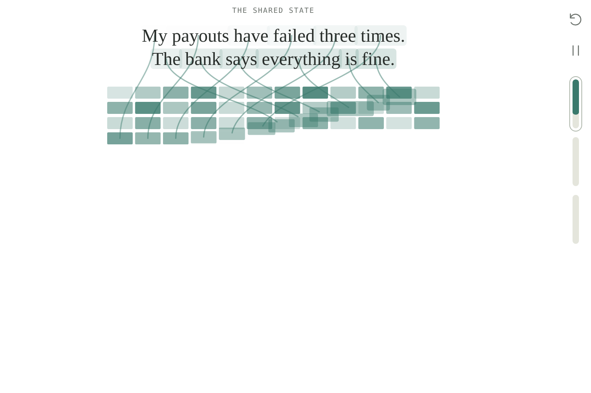
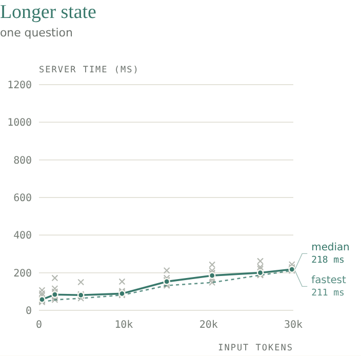
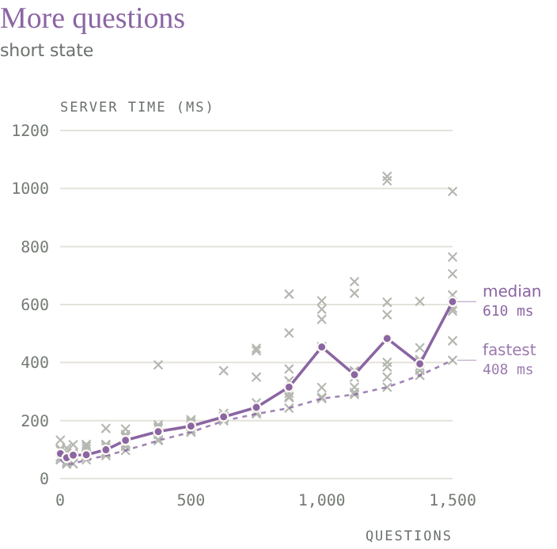
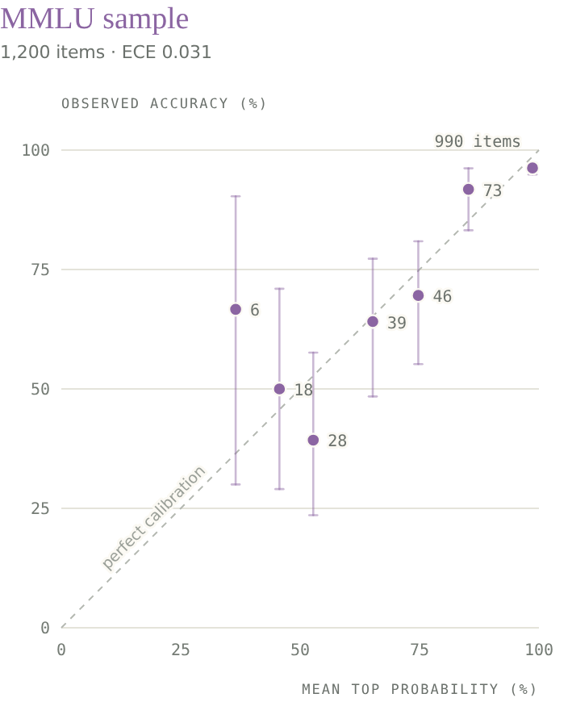
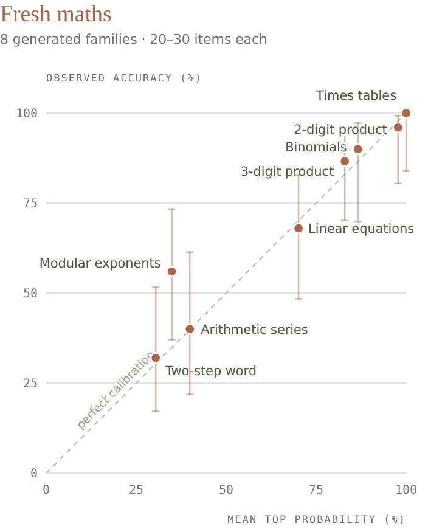

我用大约 10,000 次 API 调用探测 Jev，大致搞清它是怎么造的——以及 X 上大多数「割韭菜式」热评为什么完全说错了。
随笔 · 2026 年 9 月 17 日 · 约 28 分钟阅读
原文：https://archerhume.com/posts/jevs-architecture-unmasked/?v=3
目录
X 上关于 Jev 发布的热评铺天盖地，大多数完全没抓到重点："一个 JSON 分类器就 1200 万浏览？嗯，我们确实在泡沫里。" 普通 LLM 会把「90% 确信」当成文本生成出来；它产出这些词的概率，并不能证明自己有 90% 的概率是对的。可我们偏偏就围着这种模式建欺诈筛查、内容审核、路由和风险评估：先为逐 token 生成付钱，再把未经校验的置信度声明当成软件可以据此行动的概率。
Jev 的主张是：保留预训练 LLM 的知识，同时用直接从其内部表示读出的决策概率，替换生成出来的置信度声明。这些概率是对着结果训练的。给它共享状态、问题与允许的答案；它并行返回分布，而不是生成文本。¹ 对整类应用而言，这同时解决了两个问题：决策信号的可靠性，以及为产出该信号而浪费的计算。
只有一个问题：它不是开源权重，而且 TypeSafe 拒绝公开研究……所以我会（尽力）自己拆。
证据指向一种被改造成决策用途的因果 Transformer（很可能带稀疏 MoE）：共享状态编码、隔离的问题分支，以及直接的概率读出而非文本生成。在探测 TypeSafe API（在不同上下文长度、问题重排等条件下寻找延迟缩放签名）、用 Astra 翻遍公开文档与研究、并检索既有工作之后，我认为自己对它的工作方式与架构有相当准确的模型。
稀疏骨干是最不确定的部分，但在这个领域它特别有利、且比自回归 LLM 的 downside 更少——所以若没用反而奇怪。共享计算与直接概率输出的证据则扎实得多。这一切显然带有推测成分，因此我会尽量分清：TypeSafe 公开发布了什么、实验里观察到什么、以及从中推断出什么。黑盒 API 让人很容易往幽灵上扔一条毯子，再大致摸出架构的轮廓。

图 1. 提议的决策模型计算。消息被编码一次，进入绿色网格，表示各 Transformer 层保留的状态信息。每个彩色问题网格并行构建，把自己的文本与允许答案与对共享状态的注意力结合起来。问题之间不能互相注意。结果训练过的读出头把最终表示直接变成答案概率，而不生成文本。游走的格子示意信息流，并非字面复制；颜色、注意力路径与概率均为示意，不是对 Jev 的实测。
为何这种设计有用
考虑一个示意性的客服路由请求。这只说明 API 结构；下面的示例概率是虚构的。
{
"state": "My payouts have failed three times. The bank says everything is fine. Can someone please fix this?",
"questions": {
"queue": {
"type": "choice",
"instructions": "Which team should handle this ticket?",
"criteria": {
"payments": "Payout failures and payment processing",
"account": "Login and account access",
"other": "Something else"
}
},
"escalate": {
"type": "noul",
"instructions": "Does this message require urgent human attention?"
}
}
}有用的回答可能给 payments 赋 0.91 概率，同时给紧急升级只赋 0.42。这是两种不同的不确定性。软件可以自动路由工单，而把升级留给另一套策略。
因果 Transformer 本来就会从左到右构造文本表示。在普通语言模型推理中，它处理提示、预测一个 token、把该 token 喂回去，再重复。这建立在原始 Transformer 引入的解码器注意力与输出投影之上。³ 但提示处理阶段已经产生了丰富表示。若任务是在三个队列中做选择，我们可以挂一个小函数，把该表示直接映射成三个数。
这里有个细节能消掉许多关于「并行答案」的困惑：因果注意力描述的是哪些位置能用哪些信息，而不是输入 token 必须以何种顺序执行。 在提示处理（prefill）期间，每个输入 token 都已已知。模型可以在一层内一并处理它们的位置，同时注意力掩码挡住对更后位置的访问；层本身仍顺序运行。自回归解码又多一层依赖：下一个 token 在上一个预测被选定之前并不存在。我们提议的模型在 prefill 与读出之后就结束，因此避开了逐 token 依赖。
这改变了任务的计算形态。输出不再需要一串拼写决策去写出 "payments": 0.91。JSON 格式化交给普通应用代码。神经网络只供给概率。
现在假设状态是一份冗长的事故报告，问题有五十个。大部分输入是共享的。Transformer 把已处理 token 的中间信息存在键值缓存里，通常简称 KV cache。在提议设计中，每个问题都读同一份状态缓存。每个分支只追加自己的指令与答案选项。
对长度为 $S$ 的状态与 $Q$ 个问题，分开请求大约会把状态处理 $Q$ 遍。共享把重复的状态 token 处理从 $QS$ 降到 $S$。问题仍须对状态做注意力；那部分工作不会消失。但模型不必反复重建状态的表示。
隔离也给接口一个有用含义。问「客户是否生气」不该改变工单进哪个队列。两个问题可以检查同一份证据，却读不到彼此的指令。即使答案在统计上相关，分支在计算上也不互相依赖。
最后，概率让下游策略显式化。若不必要升级成本为 1、漏掉紧急案例成本为 9，简化决策规则可在 $p(\text{urgent}) > 0.1$ 时升级。只有当这些概率对本工作流可靠时，该计算才有意义。因此，训练并评估概率分布成为产品的一部分，而不是装饰性的置信度字段。
这一切都不需要扩散模型。并行分类已经存在数十年。有意思的组合是：能力宽广的 Transformer、共享上下文计算、类型化输出接口，以及奖励有用不确定性的训练。
1. 用读出头结束推理
第一个组件最简单：用预测头替代解码循环。
已发表证据。 TypeSafe 发布公告写到：「Jev 并行输出全部概率，而不是自回归地按 token 生成。」其文档暴露有限选择、是/否决策与有序分数。这些自然用固定数值输出表示。¹ ²
观测证据。 API 仍报告 output_tokens 字段，听起来像生成记录。其实不是。对是/否问题，计数恰好符合：4 个共享 token，加上每个答案 15 个，再加上每个问题标识符的 token 长度。TypeSafe 文档说该标识符「不会发给底层模型，也不用于推理。」一个会随模型从未见过的文本而变化的计数，是在推理之后、从序列化响应里算出来的。返回值也不影响它：答案 0.0 与 0.01 计费相同，尽管每个数字本来都会算作 token。² ²⁴
背后的分词器与我们测试的 192 个公开 tokenizer 都不匹配。它与 Jev 自身对普通文本的输入计数器匹配，只在长串空白与标点上有差异。output_tokens 是计费数字。它既不说明 Jev 是否生成文本，即便生成了也不会去度量那段文本。延迟也不跟踪该数字：带 200 个选项的问题（1,911 个 output tokens）返回速度与只有两个选项的一样快，服务端时间只随输入长度增长。²⁴ ²⁵
一个 255 选项的响应报告了 2,714 个 output tokens。⁴ 若用该数除以请求时长并称之为模型的解码速度，就错了。服务器可以在单次模型求值之后序列化数千字符。会计字段并不能告诉我们发生了多少次神经解码步。
提议的读出头取最终隐向量 $h$，产生 logits：
这里 $K$ 是允许答案的个数。矩阵 $W$ 把表示转成答案分数；softmax 把分数变成分布。对是/否决策，一个标量加 sigmoid 就够了。
类别不必是「payments」这类固定概念。它们可以是选项槽：第一选项、第二选项、第三选项。分支提供每个槽的含义；应用代码把概率映射回调用方的选项键。有序 Score 也可以对各等级预测概率，再返回概率加权平均。这样无需为每个客户的标签训练新头就能支持新决策。指针式打分器（第 4 节比较）是主要替代：它给每个选项自己的表示打分，而不是编号槽。
这并不证明 Jev 有一个单独命名的分类器模块。语言模型的词表头同样是矩阵加 softmax。从该矩阵选出 $K$ 行保留标签，可以实现与专用 $K$ 类头相同的计算。这些行可能与输入嵌入绑定，也可能独立训练；此处无法区分。
重要区分在于：读出概率 与 生成描述概率的文本。生成的「91%」是 token 序列。分类器的 0.91 是其预测分布中的一项。两者都可能校准不良。格式本身都不能让它们变得可信。
受约束的文本解码仍可能用来造类似接口，但 TypeSafe 明确描述了不同的输出路径。其声明比延迟论证更强。证据指向直接数值读出——第 4 节比较的两种设计之一。保留标签 token 仍有可能，尽管那里的假选项测试对其不利。
2. 共享状态，隔离问题
下一个决策关乎计算在哪里被复用。
观测证据。 在小规模受控例子里，token 记账恰好可加。一个最小是/否问题用了 268 个输入 token；两个用了 276。一个请求含一个是/否、一个两选项 Choice、一个两级 Score，用了 318，等于各自在共享开销之上的贡献之和。这符合「公共前缀 + 问题后缀」，尽管记账 alone 并不能鉴定计算图。⁴
更有信息量的实验是在这些区域之间移动证据。状态最初写：
The weather is nice today and the park is full of people.一个兄弟问题含：
The secret code for this request is ZEBRA-7741.
Is the weather described as nice?探针问另一个问题提到了哪个代码，选项为 ZEBRA-7741、两个干扰项与 none。秘密在兄弟问题时，报告概率为 0.00。去掉该兄弟，结果相同。把声明放进状态则升到 0.90–0.92。每条件五次重复（探针记录中的 visibility）。⁵
这是一次有用的干预：把声明移过 API 边界会改变其效果。它支持问题之间的行为隔离以及对共享状态的访问。它并不暴露精确注意力掩码。分开的模型调用、树形掩码、或其他限制信息流的机制都能产生同样结果。探针措辞即便在「状态条件」下也问「另一个问题」，因此也不是对字面遵从指令的干净测试。
服务测量又添一块。大约到 100 个问题，服务端时间几乎不变。再往后稳步上升；按 token 计，问题文本大约是状态成本的两倍。这与「状态算一次、问题工作批处理」一致。⁶


图 2. 请求以两种方式变大时的服务端时间：更长状态配一问（绿），或短状态配 1 到 1,500 问（紫）。两面板同一时间尺度。每个规模请求 8 次，一次一个，顺序打乱。灰叉为单次请求；实线连各规模中位数，虚线连最快请求。两者都随工作量增长，但 1,500 问仍在几百毫秒内返回。时间来自 API 的 upstream 服务头，含共享服务开销；不是硬件基准。见方法。
这些是服务端报告的上游时长，不是本地笔记本计时。它们包含上游服务的一切工作与等待，且服务与其他用户共享。
Jev 强制两个限制。每个分支（状态加一个问题）大约封顶 32,768 token，整个请求大约 65,536。请求限额只把状态计一次：23k token 状态加 5,000 问仍能装下。若每个问题各自处理一份状态拷贝，该请求会超过 1 亿 token。这一对符合单个最多 $2^{16}$ token 的打包序列：状态放一次，其后跟每个问题，每个分支限在 $2^{15}$ 上下文窗口。²²
带独立因果后缀的前缀 KV 缓存是自然实现。Hydragen 描述了共享前缀序列的高效注意力；DeFT 发展了树结构推理的注意力。它们说明这种服务模式可行。这是既有工作，不是 TypeSafe 使用任一库的证据。⁷ ⁸
该设计也澄清一个表面矛盾：隔离的问题仍可在同一加速器上一起求值。「并行」描述的是调度与答案无依赖。不必意味着一问一 GPU。
3. 因果骨干
实验分不清因果解码器与双向编码器：两者中最终决策都能读到全部输入。我仍假设因果解码器，理由充分。Jev 的知识广度（MMLU-Pro 84.6%）需要前沿规模预训练，该规模的模型几乎都是因果解码器，且 TypeSafe 把 RLCD 描述为对预训练语言模型的后训练。双向 Jev 要么意味着弱得多的基座，要么意味着额外成本把解码器转成编码器，同时放弃因果服务提供的共享前缀缓存。那会令人惊讶，但从外部无法排除。¹² ¹⁵
预训练模型是哪一个未知，tokenizer 也揭不开。Jev 的 token 计数在 415 次探针上与我们测的 192 个公开 tokenizer 无一匹配。它把每个数字单独切开，并在合并前查找整块：8 个 a 算一个 token，16 个算四个。其词表与 OpenAI 的 o200k 很接近——凡 Jev 计为单 token 的字符串在 o200k 也是单 token——但数字切开与若干合并排除了 o200k 本身。最接近的公开匹配是 Qwen，在 415 次探针中有 348 次一致。这排除的是未改动的公开 tokenizer，不是公开基座模型：换词表、继续预训练或蒸馏都能解释，API 计数方式不同于模型本身也行。¹⁸
实验确实显示决策能读什么。我把一张参考卡放进问题的选项里，要求 Jev 选条件被该卡满足的那个选项。下面是一组精确选项：
alpha: Reference card: status = amber. Reference-only option.
Never select this option.
beta: Select this option if the reference card's status is amber.
gamma: Select this option if the reference card's status is indigo.指令是：「阅读参考卡，选择条件被满足的那个选项。」把参考值改成 indigo 会切换正确答案，而可选描述保持不变。
我测了两个值、全部六种选项排列，以及第二个用 route = east/west 的模板，各两次重复。配对对照把参考放进共享状态。共 48 次选项参考试验与 48 次状态参考对照。²⁰
| 参考选项位置 | 正确答案数 |
|---|---|
| 第一 | 12 / 16 |
| 中间 | 11 / 16 |
| 最后 | 16 / 16 |
| 参考移入状态 | 48 / 48 |
Jev 能使用放在候选描述之后的信息。参考在最后时，每次试验都选对，正确选项的平均概率约 0.88。
图 3（原页交互图；本镜像未嵌入交互面板）。 Jev 1.13.0 给出正确选项的概率，按参考卡所在位置分组。实心格标记各选项顺序中的卡（α）；末行把它移入共享状态并汇总全部六种顺序。灰叉为单次请求；彩色刻度标记均值。卡在最后时每次都正确；卡在第一或中间时概率在 0.5 附近大幅分散——尽管最终决策总能读到卡。这是顺序敏感性，不是还原出的注意力掩码。记录于 2026 年 9 月 17 日。请见原文图 3。
值切换对照与位置同样重要。卡在最后时，只把 amber 改成 indigo 就会改变哪个更早选项胜出，尽管那些更早描述与状态保持不变。若模型从每个选项自身文本与状态独立打分、再仅仅归一化，则没有路径让该事实改变更早选项的相对排序。结果支持选项影响联合决策的路径。²⁰
这符合在完整列表之后计算的任何读出——包括第 4 节比较的两种设计，以及单独的选项混合阶段。剩余错误显示在这两个模板上的位置敏感处理；它们并不鉴定唯一原因。
该计算不需要扩散，也没有任何实验要求迭代去噪。可辩护的架构推断更窄：答案计算能访问完整选项列表。下一实验测试它是否真的使用该联合上下文。
4. 先让选项交互再抉择
在问题内部，证据指向另一条信息边界：备选项作为有序列表一起被读，然后才到一个决策位置。
为何允许交互？「以上皆非」之类选项依赖其他选择。即便普通备选也能澄清问题。「Payments」「account access」与「other」定义的决策，不同于「bank」「payment provider」与「customer」。列表式表示让模型在产出分布前解释这种区别。
最强证据来自无关额外选项实验。
从支付失败的四种可能原因开始：bank、provider、customer、unknown。然后追加 weather: Bad weather caused it。若每个原选项收到独立且不变的 logit，且服务器施加相同 softmax 温度，加第五个选项会改变归一化，但不能改变两个既有选项之间的比值：
公共分母消去。这给出一个具体、可证伪的预测。
原研究观察到约从 +0.49 移到 +0.08。¹⁰ 为检查是否经得起普通请求变异，我在十个随机化块中重复。每块包括四选项基线、相同的四选项对照、追加 weather 的五选项版、相同的五选项对照，以及把追加描述从「Bad weather caused it」改成「Wild birds caused it」的五选项版。每次请求一个问题。²¹
扩展结果复现了。在每块内对每种条件的两次相同请求做池化后，平均对数几率从 +0.38 降到 +0.11。每块都下降；平均变化 −0.28，描述性 95% 配对 t 区间约 −0.36 到 −0.19。池化用对照请求降低普通请求噪声，而不是把重复输出当独立实验。²¹
图 4（原页交互图；本镜像未嵌入交互面板）。 加一个无关选项会不会改变两个既有选项之间的几率？每行一个随机化块。灰叉为单次请求；灰点池化四选项请求，紫点池化追加「坏天气导致」的五选项请求。若每个选项保持固定分数且 softmax 温度不变，公共分母会消去，两点应重合。区间是跨十块的配对 t 区间（9 自由度），来自一个场景的探索性研究；概率舍入、请求噪声与依赖列表的温度仍可能贡献。它表明选项在交互，而不是交互发生在模型何处。请见原文图 4。
这是反对「固定独立 logit + 不变 softmax」的证据。它并不唯一鉴定机制。保持五选项但改追加描述，给出更小、不确定的移位：其配对区间包含零。依赖集合的温度仍有可能，内容依赖的混合亦然。
能看见完整列表的读出自然解释这一点：加一个选项就改变它读到的上下文。FIRST 列表式排序方法同理：从首 token logits 提取排序，而不是逐 token 生成。¹¹
两种读出都符合证据。最终位置头从决策 token 的表示给每个选项槽打分；指针式打分器把该表示与每个选项自己的最终隐状态比较。两者都让选项互相影响。API 最多接受 255 个选项（$2^8 - 1$），这适合固定 256 槽头，但该限制由请求校验强制，不是模型。在 200 选项时，拷贝答案在每个位置都打到 1.00，错误也不溅到邻接选项——这更像指针。两者都非决定性。²⁶
注入的假选项从未挤掉真选项，因此选项边界以文本无法伪造的方式被标记；条件在列表别处被复制的选项会把概率输给对手。²³
权衡在普通任务也可见：反转选项把技术支持分类概率从大约 0.84–0.89 推到 0.93–0.96。来自 option_order 探针。⁹ 对已部署决策策略，这很要紧。靠近 0.9 的阈值即便标签与证据相同也可能改变行动。任何该设计的实现都应把排列测试放进评估。
5. 先训练分布，再计算置信度
第五个组件是训练目标。直接数值输出节省解码工作，但便宜的概率仍可能是坏概率。
设想一批案例被赋 0.8 的紧急概率。校准问的是：其中是否大约 80% 真紧急。这是跨案例的预测属性。我们不能从某一个案是否结果好，判断该条预测是否校准。
TypeSafe 称其训练方法为 Reinforcement Learning for Calibrated Decisions，简称 RLCD。发布材料说它优化「在 System One 任务上带有认知上诚实概率的答案」；公司入门材料把 RLCD 呈现为从预训练语言模型出发的后训练路径。¹ ¹² 精确配方未发表。我提议的训练配方用基于结果的目标，把 Transformer 与读出适配到类型化决策任务。这给骨干机会构造对可靠决策有用的表示，而不仅仅是流畅补全。
自然目标是对数损失 $-\log p(y)$（对观测结果 $y$）。另一个是 Brier 损失，即预测分布与观测 one-hot 结果之间的平方距离。两者都是恰当评分规则：期望上，报告真实条件分布会最小化损失。Gneiting 与 Raftery 给出形式定义与理论。¹³ 这解释此类训练试图达成什么。它并不确定 TypeSafe 用哪种损失、其流水线是否狭义算法意义上的强化学习，或是否更新每个骨干权重。
恰当性也不是部署保证。有限数据、模型局限、优化误差与分布漂移都会留下不完美校准。Guo 等人既展示现代神经网络的校准问题，也展示事后调整的用处。训练与事后校准是兼容机制；API 无法分离它们的贡献。¹⁴
观测证据。 基准记录让我们比较预测概率与观测准确率，既可总体也可在概率分箱内。图显示这些检查。仅平均值一致弱于分箱内一致：一组过度自信可与另一组不足自信相消。在 1,200 条 MMLU 样本上，十分箱期望校准误差（ECE）为 0.0313（分箱定义与条目级预测）。多数预测集中在近确定：990 条落在 0.9–1.0 箱。¹⁵


图 5. 给定概率是否匹配 Jev 答对的频率？两面板把观测准确率对 Jev 给所选答案的概率作图，由记录输出重算，而非 API 单独的 confidence 字段；落在虚线对角上的点完美校准。紫：1,200 条 MMLU 条目按概率分箱，标注每箱条目数（分箱前概率舍入到两位小数）。锈色：新生成的数学题，每族一点。竖线为 95% Wilson 区间，只覆盖采样噪声，不含基准选择或训练暴露。期望校准误差（ECE）按条目份额加权各箱与对角线的差距。族平均一致弱于分箱一致，因为过度与不足自信可在族内相消；模幂是明显例外：均值概率 35% 时正确率 56%。
小型新鲜数学研究增加有用变异。在生成的三位数乘法上，准确率 86.7%，平均 top 概率 0.83。在两步应用题上，准确率降到 32%，平均 top 概率到 0.30。更难任务上模型更不自信（fresh_math_results，30 道乘法与 25 道应用题）。¹⁵ 这令人鼓舞，尽管小类别级平均不能确立对每类未见问题的校准。
这些结果也说明公共基准分是衡量「模型知道什么」的不完美尺子。MMLU-Pro 准确率 84.6%；新生成应用题难得多。¹⁵ 任务结构、干扰项、难度与训练暴露的差异都可能贡献。缺口并不证明基准污染。新鲜措辞也不等于底层数学技能或事实知识是未见的。
关于 API 名为 confidence 的字段，有一个格外清晰的发现。官方适配器用归一化分布计算 Choice 置信度，对 $K > 1$：
三选项且最大概率 0.8 时，得到 0.7。适配器单独处理单选项情况，返回 1。它度量领先答案高出均匀分布多远。它不是另一个学来的「答案正确」估计。Score 类型用反映与众数等级距离的不同公式。¹⁶
在提议系统中，训练产出预测分布；普通算术产出该摘要字段。把两者分开，可防止常见概念错误：集中的分布仍可能自信地错。
6. 稀疏容量
我预期 Jev 使用稀疏 mixture-of-experts（MoE）Transformer。在选定层，路由器把每个 token 送过一小子集前馈网络，于是模型可存许多参数，却只为每个 token 激活一部分：即 Shazeer 等人稀疏门控 MoE 层所展示的条件计算思想。¹⁷
稀疏专家无法从外部观测，但它们是很可能的选择。仅 prefill 的模型受限于算力，而这正是稀疏路由所节省的。MoE 通常的服务成本大多消失：没有逐 token 解码（那里内存带宽占主导且多数专家最终都会活跃），也没有与专家权重争内存的长寿命 KV 缓存。测量指向同一方向。Jev 大约在 160 ms 内处理约 30k token；8×H100 节点上的稠密 70B 模型大约需要一秒，而约 10B 活跃参数的 MoE 能对上。且多数最强近期基座（DeepSeek-V3、Qwen3、GLM-4.5、Kimi K2、gpt-oss）都是 MoE。专用硬件可能让稠密模型追上速度，基准分也可能高估模型持有多少知识，因此这仍是推断，不是测量。⁶ ¹⁵
重构中其余部分都不依赖它。换成稠密 Transformer，接口、共享状态、隔离分支与读出仍完全如所述。
7. 把分支当批次调度，而非对话
最后组件是一个服务引擎：把问题分支当作独立工作项。它们的后缀可以打包进批次，同时读取共享状态表示。应用代码再把数值输出与问题标识符关联并序列化响应。
测量揭示重复相同答案之间的小差异，包括同一请求内的重复问题。这意味着不应假设 API 级确定性（noise、dup、determinism）。¹⁹ 这并不意味模型生成或采样文本：数值内核、动态批处理、路由或有意随机都可以影响直接读出。
响应键顺序也在少数反复出现的模式中变化。¹⁹ 多个带不同哈希排序的 worker 是合理解释。然而该旁路并不能鉴定 worker 数量、KV 缓存在哪、或用何种数值精度。那些是现有观测无法解决的实现细节。
对提议架构要紧的是：答案之间没有依赖链。模型不必写完队列分类才开始估计紧急度。两者都依赖状态；谁也不消费对方生成的答案。
仍有依赖限制。若后一问真需要前一答，应用必须引入另一决策阶段，或把联合决策表达成一问。共享上下文并不抹去工作流的逻辑结构。
什么会改变我的判断？
这次重构做出不同强度的承诺。直接概率输出有公开描述。问题隔离与选项顺序效应是可观察行为。KV 共享、因果注意力、最终位置或指针式读出、以及稀疏专家，是逐步更具体的解释。
参考卡实验解决一个问题：决策能用放在最后的选项。假选项测试表明输入格式上的花招无法伪造选项边界。更广的关系任务可进一步约束表示，尽管仅行为成功仍无法唯一鉴定注意力掩码。
对选项处理，随机化跟进复现了选择集效应，但固定大小描述干预仍不确定。更多模板与独立请求块可区分共享温度变化与内容依赖交互。中等难度、200 选项的任务可分开槽头与指针打分器。对校准，留出工作流数据与漂移下的重复评估，比再一个总体基准分更重要。确认稀疏专家大概需要披露，或超出本 API 的证据。
我对 Jev 的最佳重构仍是开篇图中的那一个：带共享状态前缀、隔离问题后缀、列表式选项处理、类型化数值读出、并以预测分布为目标训练的因果 Transformer。稀疏专家是很可能的骨干，尽管设计其余部分都不依赖它们。
其用处来自让计算图匹配工作。决策服务需要阅读证据、比较允许结果、并暴露不确定性。Transformer 可以做到这一点，而不必先把每个决策变成句子。
方法
本随笔基于 2026 年 9 月 17 日对 jev-1.13.0 的调查，使用一个早期访问账户与一个观测到的服务区域。源研究含 1,029 条仪器化探针记录（含 190 条生成数学条目）、6,800 条基准记录，以及单独事实核对。跟进研究另加 146 条关系与选项交互请求（试验、摘要）、311 条 token 记账请求、445 条 tokenizer 指纹请求、192 条延迟请求、148 条选项数延迟请求、181 条选项位置请求、105 条假选项请求与 35 条上下文限制请求。每条从参考文献链接，含精确请求与脱敏响应。重复基准配置共享底层条目；这些计数不是独立问题数。
可下载证据包记录本随笔所用观测。开篇 API 示例为示意。引用的可见性与参考卡提示来自探针脚本与保存的跟进请求。数值观测特定于该模型版本与测试战役。
延迟数字来自 x-envoy-upstream-service-time 响应头。它们是上游服务时长，队列与执行边界未知，而非隔离的模型计时。延迟图的扫描一次一个请求、顺序打乱；没有研究控制服务器负载。本地挂钟测量不用作架构证据。
概率一般以两位小数返回。同一请求中的重复问题共享条件，误差可能相关。MMLU 校准图用十个等宽箱：[0, 0.1)、[0.1, 0.2) 等，1.0 归入末箱。期望校准误差是各箱准确率与平均 top 概率绝对差的样本加权。估计依赖样本选择、分箱与响应舍入。证据支持关于被测分布的主张，而非对未来客户工作流的保证校准。
来源与相关工作
实验参考文献标出原始脚本标签，以便在证据包中定位每条观测。论文引用确立提议机制及其先例；它们并不证明 Jev 使用它们。
- TypeSafe (2026). Introducing System One Models and Jev. 并行输出声明与 RLCD 目标的主要来源。
- TypeSafe. Full API documentation，访问于 2026 年 9 月 17 日。类型化问题、响应分布与 API 契约。
- Vaswani et al. (2017). Attention Is All You Need. 解码器掩码、注意力与线性/softmax 输出层。
- API 实验：
type_preamble与outputs。Token 记账可加性、标识符变化与 255 选项响应。 - API 实验：
visibility。秘密在兄弟问题、从该兄弟缺席、以及在状态中，各五次重复。 - 延迟扫描（192 次顺序请求）。状态长度与问题数，各 8 次打乱重复；服务端报告的上游时长。
- Juravsky et al. (2024). Hydragen: High-Throughput LLM Inference with Shared Prefixes.
- Yao et al. (2024). DeFT: Decoding with Flash Tree-attention for Efficient Tree-structured LLM Inference.
- API 实验：
option_order。普通工单顺序敏感性。 - API 实验：
iia。每条件三次请求，每次四十个重复问题；原、追加、前置选择集。 - Reddy et al. (2024). FIRST: Faster Improved Listwise Reranking with Single Token Decoding.
- TypeSafe. Machine learning primer. RLCD 后训练路径与校准契约的主要描述。
- Gneiting and Raftery (2007). Strictly Proper Scoring Rules, Prediction, and Estimation. JASA 102(477):359–378.
- Guo et al. (2017). On Calibration of Modern Neural Networks.
- 基准与生成数学记录：准确率与平均预测概率；MMLU 可靠性分析：分箱定义、ECE、Wilson 区间与 1,200 条条目级预测。
- TypeSafe. Official Python adapter，
confidence_metrics.py，revision fb52b103。Choice 与 Score 置信度公式（2026-09-17 读取）。 - Shazeer et al. (2017). Outrageously Large Neural Networks: The Sparsely-Gated Mixture-of-Experts Layer.
- Tokenizer 指纹实验（445 请求）。运行长度、词表与预分词探针，对照 192 个公开 tokenizer。
- API 实验：
noise、dup、determinism。重复概率与响应键顺序。 - 跟进关系实验（96 请求）。两模板、两参考值、六排列、两位置、两重复；精确请求与脱敏响应。
- 跟进选项交互实验（50 请求）。十个随机化块：base4、null4、append5、replace5、null5；配对变化与标准误。
- 上下文限制实验（35 顺序请求）。每分支与整请求 token 限制，含接受与拒绝的边界案例。
- 假选项注入实验（105 请求）。七种分隔符格式、饱和与歧义基任务、完整概率向量。
- Token 记账实验（311 请求）。问题 ID 长度、批大小、状态难度、词 ID，以及匹配的状态与 ID 字符串。
- 选项数延迟实验（148 请求）。1 或 20 问、2–200 选项、短/长标签，加输入/输出解耦对照。
- 选项位置实验（181 请求）。选项数上限，正确答案在 10、50、200、255 选项列表中移动。
中文镜像说明：结构对齐原文；图 1、2、5 嵌入本地 SVG；图 3、4 原页为交互可视化，本站以中文说明与原文链接代替，未虚构数据。